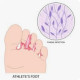

Tinea pedis
Rx
1.Cream clotrimazole 1% N=1 q12h for 2w
Or Cream Terbinafine 1%
Or Tab Terbinafine 250mg N=14 daily
نکته: بصورت پوسته ریزی سفید رنگ بین انگشتان دیده میشه
نکته: با فرم موضعی معمولا درمان میشود. درصورت عدم درمان فرم خوراکی تجویز کنید.
1️⃣ درماتیت تماسی
2️⃣ کاندیدیازیس جلدی
3️⃣ اریتراسما
4️⃣ اریتم مولتی فرم
Friction Blisters 5️⃣
Dyshidrotic Eczema (Pompholyx) 6️⃣
Pityriasis Rubra Pilaris 7️⃣
8️⃣ پسوریازیس